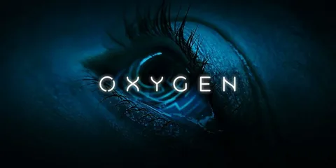
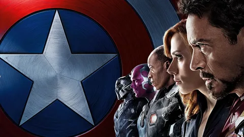
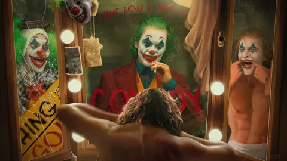

-

TITANIC
Filmin Konusu
Dünya üzerinde yaşanan ve insan oğlunun asla hatırlamak istemeyeceği büyük felaketlerden bir tanesi olan Titanik Faciası, de prodiksiyonların yönetmeni olarak bilinen James Cameron tarafından çekilerek izleyicisi ile buluşturulan bir film. Teknolojinin tam hızla ilerlediği bir dönemde, insanlar üzerinden gelemeyeceği hiçbir sorunun kalmadığını düşünmeye başlarlar. Titanic isimli dev transatlantik ise insanoğlu tarafından doğaya meydan okuma çabasıdır. Söz konusu olan bu gemide yolcular arasında Avrupa’da birkaç yıl geçirdikten sonra Amerika’ya dönmekte olan Jack isimli genç bir ressam ile nişanlısı ve annesiyle Philadelphia’ya giden Rose isimli çok güzel bir kızda vardır. İki genç tamamen tesadüfen tanışacak ve aralarında var olan sınıf farkını görmezden gelerek birbirlerine yaklaşacaklardır. Öte yandan artık hiçbir gücün durduramayacağını düşünen insan oğlunun kibiri ise her geçen gün biraz daha artmaya devam ediyor. Doğa ise adeta bu kibiri insanoğlunda yok etmek için hazırlık yapıyor. Büyük ve son teknoloji ile donaltılan Titanik, yola çıkmasından dört buçuk gün sonra, 10 Nisan 1912 yılında sulara gömülmesi ile son bulan hazin olayların başlamasına neden olacak buz dağına çarpacaktır.
Filmin Oyuncuları
Leonardo DiCaprio ---> Jack Dawson
Kate Winslet ---> Rose DeWitt Bukater
Billy Zane ---> Cal Hockley
Kathy Bates ---> Molly Brown
Frances Fisher ---> Ruth Dewitt Bukater
Gloria Stuart ---> Old Rose
Bill Paxton ---> Brock Lovett
Bernard Hill ---> Edward Smith
David Warner ---> Spicer Lovejoy
Victor Garber ---> Thomas Andrews
Jonathan Hyde ---> Bruce Ismay
Suzy Amis ---> Lizzy Calvert
Placeholder ---> Lewis Abernathy
Lewis Bodine ---> Placeholder
Nicholas Cascone ---> Bobby Buell
Danny Nucci ---> Fabrizio -

OXYGEN
Filmin Konusu
Fransa yapımı film 12 Mayıs 2021 tarihinde Amerika’da gösterime girmiştir. Genç bir kadın; kriyojenik bir kapsülde, hafızasını kaybetmiş hâlde uyanır. Kim olduğunu ve kapsüle nasıl geldiğini hatırlamayan genç kadının oksijeni hızla tükenmektedir ve bu kâbustan kurtulmanın bir yolunu bulmak için hafızasını geri kazanmaktan başka bir çaresi yoktur. MILO adlı gelişmiş bir yapay zeka genç kadına yardımcı olmaktadır, ancak kriyo birimini yönetici kodu olmadan açmayı reddeder. MILO, hayatta kalma şansının olmaması nedeniyle bir ötenazi protokolü başlatır, ancak Elizabeth’in klonu protokolü devre dışı bırakmayı başarır. Senaryosunu Christie LeBlanc’ın yazmış, Alexandre Aja yönetmenliğini ve yapımcılığını üstlenmiştir.
Filmin Oyuncuları
Mélanie Lauren ---> Elizabeth "Liz" Hansen
David Hasselhoff ---> M.I.L.O
Malik Zidi ---> Léo Ferguson
Laura Boujenah ---> Alice Hansen
Éric Herson-Macarel ---> Capitaine Moreau
Marc Saez ---> Inspecteur -

CAPTAIN AMERICA
Filmin Konusu
Marvel alemi için sivil savaş alarmı! Kaptan Amerika: Kahramanların Savaşı; süper kahramanları, öykü evreninin en önemli konusunda karşı karşıya getiriyor. Yenilmezler'in dahil olduğu olay kötü sonuçlanınca, politik güçler Yenilmezler'in bir otorite tarafından takip edildiği ve yönlendirildiği bir sistem kurulması için baskı yapmaya başlarlar. Bu durum Yenilmezler'in fikir ayrılığına düşerek iki gruba ayrılmasına neden olur. Steve Rogers'ın önderliğinde Yenilmezler'in hükümet baskısı olmaksızın özgür bir biçimde insanlığı korumaya devam etmesini savunan grup ve Tony Stark'ın şaşırtıcı bir biçimde hükümet kontrolünü ve müdahalesini destekleyen bir diğer grup. Chris Evans'ın dördüncü defa Kaptain Amerika kostümünü giyeceği filmde, yönetmen koltuğunda yeniden Russo Kardeşler var! Chris Evans'a başrollerde Robert Downey Jr., Scarlett Johansson, Sebastian Stan, Elizabeth Olsen, Paul Rudd, Daniel Brühl gibi isimler eşlik ediyor.
Filmin Oyuncuları
Chris Evans ---> Kaptan Amerika
Robert Downey Jr. ---> Demir Adam, Tony Stark
Anthony Mackie ---> Sam Wilson
Sebastian Stan ---> Kış Askeri
Jeremy Renner ---> Clint Barton
Scarlett Johansson ---> Natasha Romanoff
Elizabeth Olsen ---> Wanda Maximoff
Paul Rudd ---> Scott Lang
Paul Bettany ---> Vision
Don Cheadle ---> James Rhodes
Chadwick Boseman ---> T'Challa
Daniel Brühl ---> Baron Zemo -

JOKER
Filmin Konusu
Joker, başarısız bir komedyen olan Arthur Fleck'in hayatına odaklanıyor. Toplum tarafından dışlanan bir adam olan Arthur, hayatta yapayalnızdır. Sürekli bir bağ kurma arayışında olan Arthur, yaşamını taktığı iki maske ile geçirir. Gündüzleri, geçimini sağlamak için palyaço maskesini yüzüne takan Arthur, geceleri ise asla üzerinden silip atamayacağı bir maske takar. Babasız büyüyen Arthur’u en yakın arkadaşı olan annesi Happy adıyla çağırır. Bu lakap, Arthur’un içindeki acıyı gizlemesine yardımcı olur. Ancak maruz kaldığı zorbalıklar, onun gitgide topluma aykırı bir adam haline gelmesine neden olur. Yavaş yavaş psikolojik olarak tekinsiz sulara yelken açılan Arthur, bir süre sonra kendisini Gotham Şehri’nde suç ve kaosun içinde bulur. Arthur, zamanla kendi kimliğinden uzaklaşıp Joker karakterine bürünür
Filmin Oyuncuları
Joaquin Phoenix ---> Arthur Fleck / Joker
Robert De Niro ---> Murray Franklin
Zazie Beetz ---> Sophie Dumond
Frances Conroy ---> Penny Fleck
Brett Cullen ---> Thomas Wayne
Shea Whigham ---> Dedektif Blake
Bill Camp ---> Dedektif Garrity
Marc Maron ---> Gene
Josh Pais ---> Hoyt Vaughn